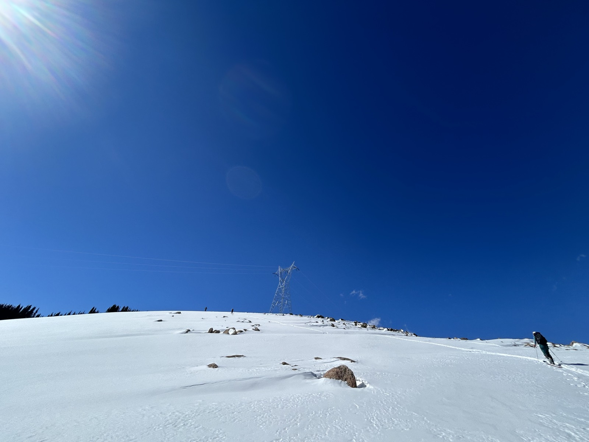
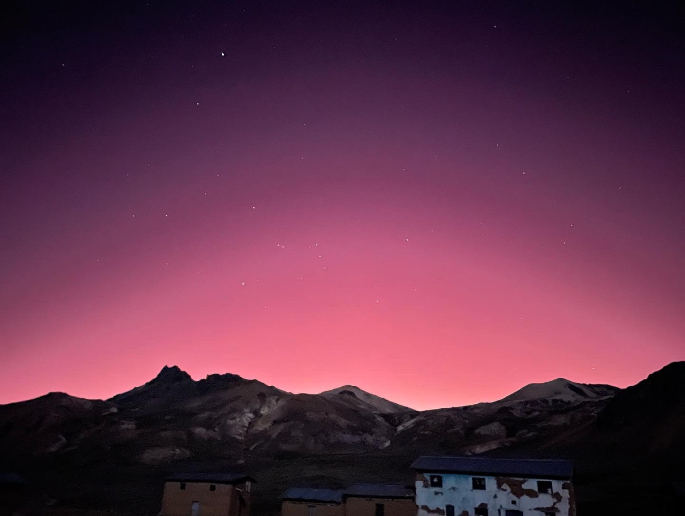
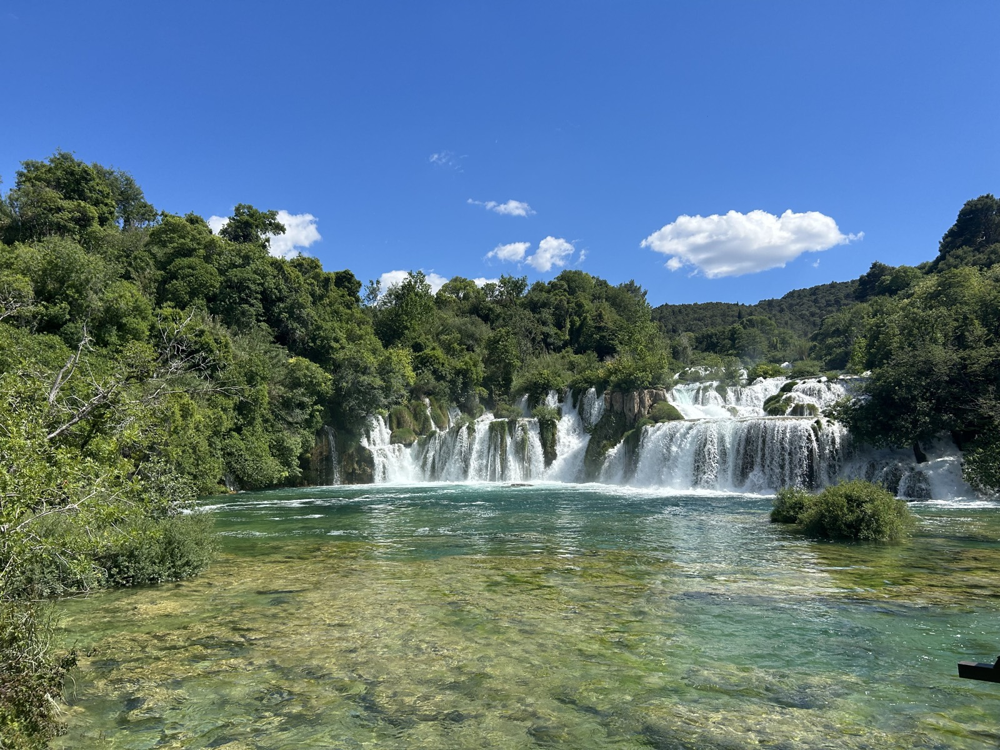

MS student in Environmental, Resource, and Energy Policy at Colorado School of Mines. This is where I track what I'm learning as I work toward a career in the energy sector.

Colorado School of Mines, focused on modernizing the electric grid.
Tracking dockets, decisions, and debates shaping Colorado's energy future.
Working through books like The Grid and Shorting the Grid, plus relevant podcasts.

